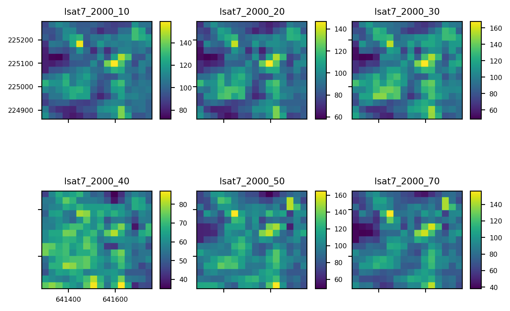

Pyspatialml includes common geoprocessing methods that collectively operate on stacks of raster datasets, such as cropping, reprojecting, masking etc. Most of these methods are simple wrappers around underlying rasterio functions, but applied to stacks of raster datasets.
Handling of Temporary Files
All of the geoprocessing methods have a file_path parameter to specify a file path to save the results of th geoprocessing operation. However, pyspatialml is designed for quick an interactive analyses on raster datasets, and if a file path is not specified then the results are saved to a temporary file location and a new Raster object is returned with the geoprocessing results.
For datasets that will easily fit into memory, all geoprocessing methods also have an in_memory parameter. If in_memory=True is set, then the results will be created using Rasterio’s in-memory files and stored in RAM. This has performance advantages, at the expense of memory expenditure.
Cropping
All layers within a Raster can be cropped to a new extent using the Raster.crop method.
# crop to new extent (xmin, ymin, xmax, ymax)crop_bounds = training_py.loc[0, "geometry"].boundsstack_cropped = stack.crop(crop_bounds)stack_cropped.plot()plt.show()

Masking
In comparison to cropping, masking can be used to set pixels that occur outside of masking geometries to NaN, and optionally can also crop a Raster.
import geopandas as gpdimport pyspatialml.datasets.nc as ncfrom pyspatialml import Rastertraining_py = gpd.read_file(nc.polygons)mask_py = training_py.iloc[0:1, :]predictors = [nc.band1, nc.band2, nc.band3, nc.band4, nc.band5, nc.band7]stack = Raster(predictors)# mask a Rastermasked_object = stack.mask(mask_py)
Intersecting Layers
The Raster.intersect method computes the geometric intersection of the RasterLayers with the Raster object. This will cause nodata values in any of the rasters to be propagated through all of the output rasters.
The intersect method is memory-safe, i.e. the intersection occurs during windowed reading and writing of the Raster. The size and dimensions of the windows can be changed using the Raster.block_shapes property.
Reprojecting
Reprojecting a raster using the Raster.to_crs method.
Other parameters that can be passed and their defaults are resampling=“nearest”, file_path=None, driver=“GTiff”, nodata=None, n_jobs=1, warp_mem_lim=0, progress=False, and other kwargs that are passed to the raster format drivers.
Resampling
The Raster.aggregate method is used to resample a raster to a different resolution using the decimated reading approach in the rasterio library.
Where function is a user-defined python that takes an numpy array as a single argument, and can return either a 2d array that represents a single raster dataset, such as NDVI, or can operate on a number of layers and can return a raster with multiple layers in a 3d array in (layer, row, col) order.
The apply function is memory-safe, i.e. it applies the function to windows of the raster data that are read sequentially or in parallel (with n_jobs != 1). The size and dimensions of the windows can be changed using the Raster.block_shapes property.
Raster Algebra
RasterLayer objects also support basic raster math operations using python’s magic methods, which supports all of the usual math operators. Calculations on RasterLayers occur in memory using Rasterio’s in-memory files, thus they are not memory safe. For applying computations and algebra to large raster datasets in windows, use Raster.apply().